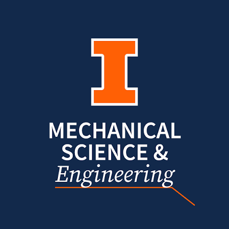

Academic achievement and awards
-
Kenneth J. Trigger Award2021
Presented by the Department of Mechanical Science and Engineering to a graduating senior who has shown strong interest and excellence in manufacturing, alongside overall scholarship.
-
Fred B. Seely Award2020
Presented to an outstanding senior in engineering mechanics. Established by the sons of Professor Fred B. Seely, who led the former Theoretical and Applied Mechanics department from 1934 to 1952.
-
GM / Philip W. Leistra, Jr. SAE Award2020
Funded by General Motors in memory of Philip W. Leistra, Jr. (BSME, Illinois 1969), and presented to an outstanding member of the SAE student chapter who is also a student in MechSE.

Research activities
I spent a full-time summer at ETRL working on the fundamentals of condensation heat transfer. Condensation turns up throughout industrial chemical processing, so even modest gains in how efficiently it moves heat add up quickly across an industry, and the lab worked on ways to improve it.
Most of my time went to enhancing condensation of low-surface-tension fluids on engineered surfaces, where I demonstrated the first known dropwise condensation of p-xylene on a lubricant-infused surface. I also built an automated rig to measure the thermal conductivity of electrically insulating materials against their manufacturer specs, which I presented at ASME InterPACK 2019.